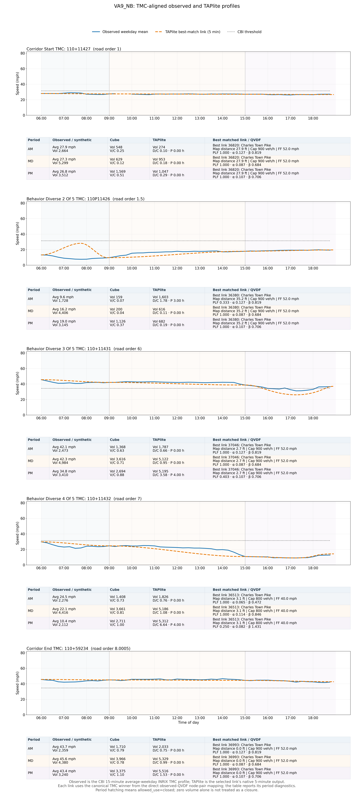
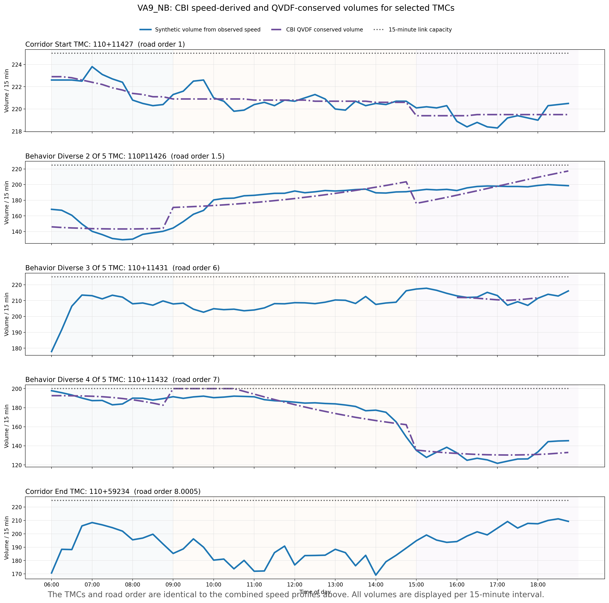

Every displayed record is classified facility_class = gp in the authoritative map-matching product. Each displayed link is paired with the canonical winning GP TMC from the same node-pair ranking used for direct PLF, observed speed-boundary, and observed congestion-boundary inputs. Observed points are shown at 15-minute resolution and TAPlite uses that link's native 5-minute output. The table below each plot reports the selected link and its period diagnostics.

Open the complete corridor profile measurement page →
The volume profiles below use the same selected TMCs and road order as the combined speed profiles.
